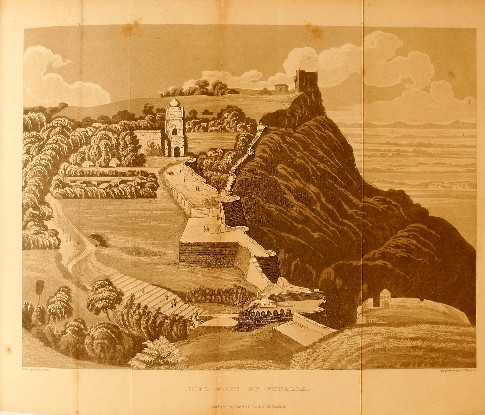
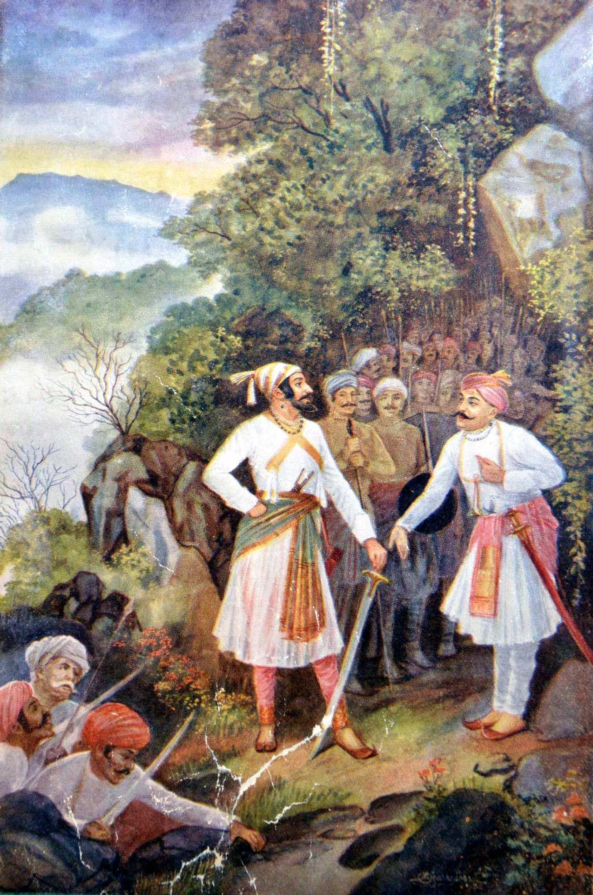

पन्हाळा → विशाळगड → पावनखिंड — सिद्दी जौहरच्या वेढ्यातून शिवरायांची सुटका आणि बाजीप्रभू देशपांडे व बांदल सेनेने घोडखिंडीत दिलेले अंतिम बलिदान.

बाजीप्रभू देशपांडे व बांदल सेनेने शेवटच्या श्वासापर्यंत शत्रूला रोखून धरलेली खिंड.
अफझलखान वधानंतर काही दिवसांतच शिवरायांनी पन्हाळगड ताब्यात घेतला होता. हा वाढता प्रभाव रोखण्यासाठी आदिलशाहीने सरदार सिद्दी जौहरला मोठ्या फौजेसह पन्हाळगडाला वेढा घालण्याचे आदेश दिले. अनेक महिने चाललेल्या या वेढ्यात गडावरील रसद व मदत हळूहळू कमी होत गेली. ऐतिहासिक नोंद
प्रदीर्घ वेढ्यानंतर शिवरायांनी वाटाघाटीचा आभास निर्माण करत रात्रीच्या वेळी गुप्तपणे गडावरून निसटण्याची योजना आखली — आणि विशाळगडाकडे कूच केले. ऐतिहासिक नोंद
मुसळधार पावसाच्या रात्री शिवराय, बाजीप्रभू देशपांडे आणि सुमारे ६०० मावळ्यांची तुकडी घेऊन पन्हाळगडावरून गुप्तपणे बाहेर पडले आणि विशाळगडाच्या दिशेने वेगाने कूच केले. वेढा उठवल्याचे लक्षात येताच सिद्दी मसूदच्या नेतृत्वाखालील आदिलशाही फौज पाठलागावर निघाली. ऐतिहासिक नोंद
शिवराय सुरक्षितपणे विशाळगडाकडे पुढे जाऊ शकावेत यासाठी बाजीप्रभू देशपांडे यांनी बांदल सेनेसह घोडखिंडीत (आजची पावनखिंड) शत्रूला रोखून धरण्याचा निर्णय घेतला. अरुंद खिंडीचा भौगोलिक फायदा घेत मूठभर मावळ्यांनी सिद्दी मसूदच्या मोठ्या फौजेला दीर्घकाळ अडवून धरले. ऐतिहासिक नोंद
शिवराय सुखरूप विशाळगडावर पोहोचल्याचा इशारा (तोफांचा आवाज) मिळेपर्यंत बाजीप्रभूंनी शेवटच्या श्वासापर्यंत खिंड लढवली आणि याच लढाईत ते धारातीर्थी पडले. या बलिदानाच्या स्मरणार्थ शिवरायांनी 'घोडखिंड' या नावाचे 'पावनखिंड' असे नामकरण केले. ऐतिहासिक नोंद
पन्हाळगडाचे तीन स्तरांचे भव्य प्रवेशद्वार — गडाच्या मजबूत तटबंदी रचनेचे उत्तम उदाहरण.
ऐतिहासिक नोंदधान्यसाठ्यासाठी बांधलेला अंबरखाना व गडावरील प्रशासकीय इमारत सज्जा कोठी — पन्हाळगडाच्या मोठ्या प्रशासकीय भूमिकेची साक्ष.
ऐतिहासिक नोंदकोल्हापूर जिल्ह्यातील हा किल्ला शिवरायांच्या सुरक्षित आश्रयाचे अंतिम ठिकाण ठरला. गडाजवळच बाजीप्रभू व बांदल सेनेच्या स्मरणार्थ स्मारक उभारलेले आहे.
ऐतिहासिक नोंदकोल्हापूरहून पन्हाळगड सहज गाठता येतो. पावनखिंड (घोडखिंड) व विशाळगड कोल्हापूर-शाहुवाडी मार्गे जोडलेले असून एकाच दिवसात तिन्ही स्थळांना भेट देणे शक्य आहे.
व्यावहारिक माहिती